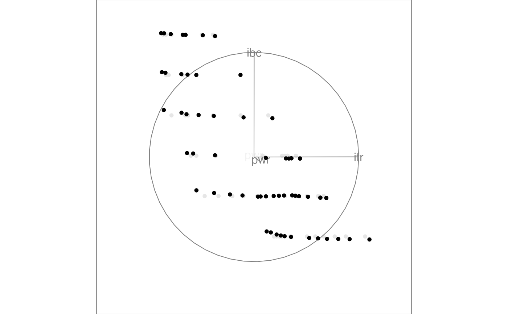

This data came from an investigation of an experimental laser at Bellcore. It was a tunable laser, in the sense that both its wavelength and power output were controllable.
A 64 x 4 numeric array
Rotation helped the experimental physicists to characterize the laser, which turned out not to be a very good one, due to its unstable operating region.
This data initially came to the statistics research group when Janette Cooper asked Paul Tukey to help her analyze the data she had collected to describe the laser.
ifront, current applied to the front of the laser
iback, current applied to the back of the laser
power, output power
lambda, output wavelength
#> ifront iback power lambda #> 1 12 70 -38.3 1579.1 #> 2 13 70 -38.1 1579.1 #> 3 15 70 -36.5 1579.1 #> 4 19 70 -35.1 1579.0 #> 5 20 70 -35.1 1577.8 #> 6 20 70 -35.1 1578.1#>#> target_dist - cur_dist: 0 #> generation: dist = 1.248597#>#> target_dist - cur_dist: 1.248597